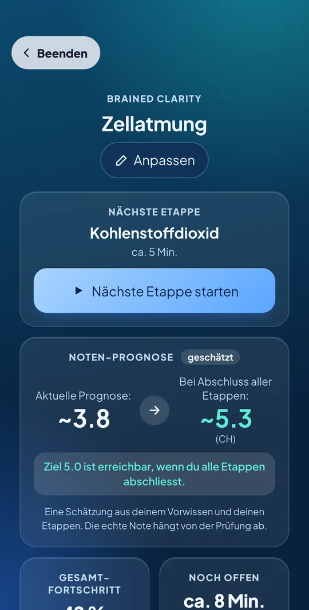
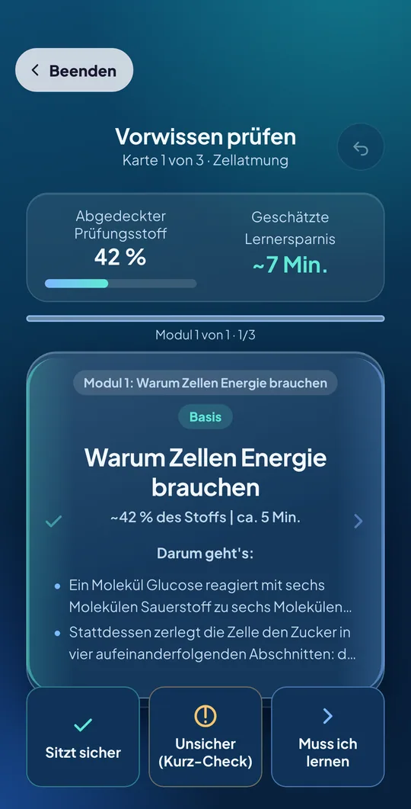
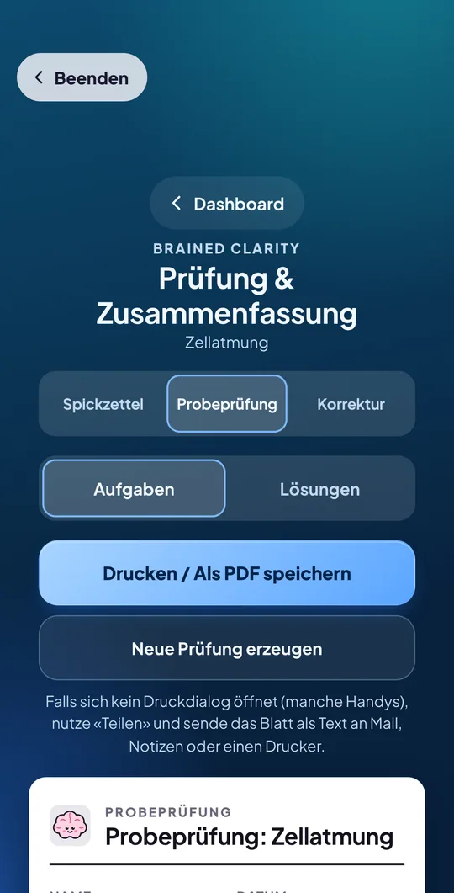

Dein Stoff.
Klar gefiltert.
Lade deine Unterlagen hoch. Clarity zeigt dir, was in der Prüfung zählt, und führt dich in kurzen Etappen zu deiner Zielnote.
Teil der Brained-App: Lernzeit-Timer, Lernräume und Ranglisten inklusive. Für Schweiz, Deutschland und Österreich · Deutsch, Français, Italiano, English

Von 400 Seiten zu einem klaren Plan.
Vier Schritte, die in deinen Alltag passen.
Hochladen
Beliebig viele PDFs. Notensystem und Zielnote wählst du selbst.
Filtern
Wische durch die Konzepte: muss ich lernen, unsicher oder sitzt schon.
Lernen
Etappen von 5 bis 8 Minuten mit Fragen, Lücken, Zuordnen und Rechnen.
Prüfen
Spickzettel und Probeprüfung auf A4, mit Foto-Korrektur und Note.
Nur lernen, was du wirklich brauchst.
Clarity gliedert den Stoff in Konzepte mit Gewicht in Prozent. Was du schon kannst, überspringst du. Live siehst du, wie viel Prüfungsstoff du abdeckst und wie viel Lernzeit du sparst.
- Gewicht und Aufwand pro Konzept auf einen Blick
- Kurz-Check bei Unsicherheit statt langer Theorie

Sechs Bausteine, die sich abwechseln.
Jede Etappe ist kurz und gibt dir sofort Rückmeldung.
Kompakt-Wissen
Das Wichtigste, plus die typische Prüfungsfalle.
Multiple Choice
Mit Erklärung, warum eine Antwort stimmt.
Lückentext
Ergänze die entscheidenden Begriffe.
Zuordnen & Reihenfolge
Bring Begriffe und Abläufe in Ordnung.
Offene Frage
Per Sprache oder Text. Die KI prüft deine Antwort.
Rechnen
Aufgaben in drei Schritten, Schritt für Schritt geprüft.
Spickzettel und Probeprüfung auf A4.
Der Spickzettel fasst das Wichtigste auf einer Seite zusammen. Die Probeprüfung löst du auf Papier, fotografierst sie und bekommst Teilpunkte, Feedback und eine Note.
- Spickzettel zum Ausdrucken
- Foto-Korrektur mit Teilpunkten pro Aufgabe
- Realistische Note im System deines Landes

Deine Zielnote, nach deinem System.
Deine Unterlagen gehören dir.
Die Dateien bleiben auf deinem Gerät. Für jede Etappe gehen nur die passenden Textauszüge zur Verarbeitung und werden von Brained nicht gespeichert. Kein Datenverkauf, Konto jederzeit in der App löschbar.
Ehrlich bei der Note.
Noten-Prognose, Lernersparnis und Prüfungsnote sind Schätzungen. Die KI kann Fehler machen, prüfe Wichtiges mit deiner Lehrperson.
Zum Start: alles gratis.
Clarity ist in der Startphase kostenlos, mit fairen Limits. Danach folgt Brained Pro.
Gratis
- Brained Clarity mit fairen Limits
- 1 Probeprüfung pro Woche
- 15 KI-Anfragen pro Tag
- Timer, Lernräume, Ranglisten, Gruppen
Pro Jahr
- Bis zu 5 Probeprüfungen pro Tag
- 150 KI-Anfragen pro Tag
- Rund CHF 3.25 pro Monat
- 7 Tage gratis testen
Pro Monat
- Alle Pro-Vorteile
- Für die Prüfungsphase
- Monatlich kündbar
Brained Pro ist noch nicht verfügbar. Preise und Limits können sich bis zum Start noch ändern.
Häufige Fragen
Kostet Clarity etwas?
Zum Start nicht. Clarity ist mit fairen Limits gratis. Später folgt Brained Pro mit höheren Tageslimits.
Wie viele Unterlagen kann ich hochladen?
Beliebig viele PDFs, auch mit 100 bis 400 Seiten. Optional gibst du Lernziele oder eine Altklausur dazu, damit Clarity den Prüfungsfokus besser trifft.
Was ist die Noten-Prognose?
Clarity schätzt aus deinen Angaben im Swipe und deinen Ergebnissen in den Etappen, welche Note du jetzt und bei Abschluss erreichen könntest. Das ist eine Schätzung, kein Versprechen.
Wie funktioniert die Probeprüfung?
Du druckst sie aus oder löst sie am Tablet, fotografierst deine Lösung und reichst sie ein. Du bekommst Feedback pro Aufgabe, Teilpunkte und eine Note nach dem System der Schweiz, Deutschlands oder Österreichs.
Kann ich per Sprache antworten?
Ja, bei offenen Fragen kannst du sprechen oder tippen. Die Spracheingabe nutzt die Spracherkennung deines Betriebssystems.
Wo liegen meine Daten?
Hochgeladene Unterlagen bleiben auf deinem Gerät. Für jede Etappe gehen die passenden Textauszüge an unseren Server in Europa und von dort an den KI-Dienst. Details in der Datenschutzerklärung.
Ab welchem Alter?
Ab 13 Jahren. Unter 16 Jahren brauchst du das Einverständnis deiner Eltern.
Bereit für deine Zielnote?
Starte Clarity gratis im Browser und lade deinen Stoff hoch.